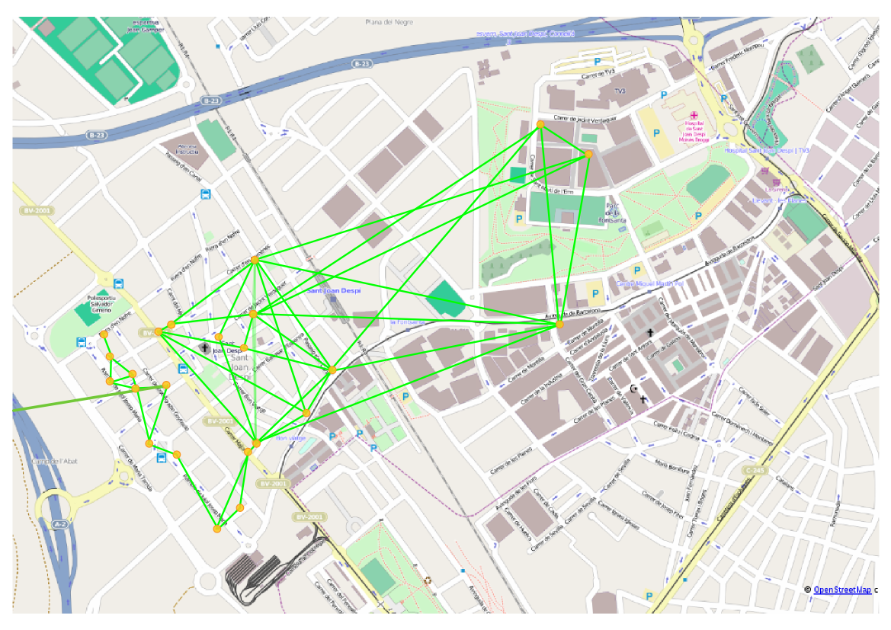

Facilitant que els veïns del Baix Llobregat es desempalleguin de les grans telecos.

GuifiBaix és un projecte d'economia social amb seu a Sant Joan Despí que té com a principal objectiu facilitar que els nostres veïns i veines es desvinculin progressivament de les grans empreses de telecomunicacions i de les seves pràctiques abusives amb els usuaris, els treballadors i la societat.
 Ho fem connectant els veïns i veines a la xarxa ciutadana guifi.net
per donar resposta a les seves necessitats de telefonia fixa i Internet.
Ho fem connectant els veïns i veines a la xarxa ciutadana guifi.net
per donar resposta a les seves necessitats de telefonia fixa i Internet.
 GuifiBaix és una iniciativa nascuda de la campanya
Desconnexió de l'IBEX35
del 15M de Sant Joan Despí.
L'objectiu de la campanya és posar a l'abast dels ciutadans
la informació i els mitjans per deixar d'engreixar a les
grans empreses oligopolístiques que controlen l'estat.
Banca, electricitat, medis, assegurances, alimentació, informàtica...
GuifiBaix és una iniciativa nascuda de la campanya
Desconnexió de l'IBEX35
del 15M de Sant Joan Despí.
L'objectiu de la campanya és posar a l'abast dels ciutadans
la informació i els mitjans per deixar d'engreixar a les
grans empreses oligopolístiques que controlen l'estat.
Banca, electricitat, medis, assegurances, alimentació, informàtica...
En el cas de Guifi.net per les telecomunicacions, vam veure que el salt dels usuaris finals no era tan senzill com podia ser, per exemple, SomEnergia per la electricitat, i que calia un actor local, com n'hi ha a d'altres indrets on Guifi.net funciona bé, que en fes les instaŀlacions, el manteniment, i reduís la complexitat de tot plegat.
GuifiBaix facilita que qualsevol persona pugui participar de la xarxa Guifi.net, encara que no tingui els coneixements tècnics necessaris, o no tingui temps per dedicar-s'hi.
Ofereix a les comunitats de veïns solucions a punt per endollar i funcionar, incloent el cablejat de l'edifici i la configuració dels aparells de xarxa. Manté i coordina la xarxa de la zona, repartint el fluxe de dades, i oferint serveis convenients als usuaris.
Per garantir unes condicions justes als treballadors, ens organitzem sota principis cooperatius i d'economia social. Els treballadors de GuifiBaix tenim el control de les nostres condicions de treball.
Per garantir un tracte just als usuaris, el primer és donar-los llibertat. No volem usuaris lligats. La infraestructura que instaŀlem pertany als usuaris, està basada en estàndards oberts y està ben documentada. Si ens tornem malèvols, els usuaris tenen dret a cercar una fórmula empresarial o a base de voluntaris que ens substitueixi. A més, promovem l'auto-organització i formació d'usuaris perque puguin pendre decissions al voltant de l'evolució de la xarxa.
 GuifiBaix és un projecte a la incubadora d'economia social, AT2.
Durant el periode d'incubació és AT2
qui factura i fa els contractes amb treballadors i usuaris.
GuifiBaix és un projecte a la incubadora d'economia social, AT2.
Durant el periode d'incubació és AT2
qui factura i fa els contractes amb treballadors i usuaris.
La incubadora ens ha permés avaluar com funciona el projecte i properament ens constituirem en cooperativa de treball sense ànim de lucre i convidarem a la comunitat d'usuaris a constituir-se en associació per pendre decissions democràtiques respecte el comuns generat.

guifi.net és una xarxa pública construïda pels mateixos usuaris. Cada participant construeix només el tram de xarxa que passa per casa seva i posant el seu tram a disposició dels altres, té dret a circular per la resta de trams.
 Normalment els enllacos es fan posant,
als terrats o a les balconades,
antenes Wi-Fi direccionals
apuntant-se entre sí.
Normalment els enllacos es fan posant,
als terrats o a les balconades,
antenes Wi-Fi direccionals
apuntant-se entre sí.
A les zones on ja hi ha molts usuaris, els participants han començat a posar enllaços de fibra òptica en comptes dels Wi-Fi.
 Els participants de la xarxa comparteixen recursos i serveis.
El més popular és la connectivitat a Internet
(compartir els ADSL's),
però també hi ha d'altres serveis interns de la xarxa
que van a altes velocitats, perque no han de sortir per cap ADSL.
Els participants de la xarxa comparteixen recursos i serveis.
El més popular és la connectivitat a Internet
(compartir els ADSL's),
però també hi ha d'altres serveis interns de la xarxa
que van a altes velocitats, perque no han de sortir per cap ADSL.
Alguns exemples són la telefonia IP, l'enmagatzament i compartició de fitxers al núvol, els serveis de video-conferència, les descàrregues compartides, emisores de ràdio i televisió online, e-mail, hosting web, intranets, servidors de noms, servidors de jocs online...
 A data d'avui guifi.net té més de 28.000 nodes actius.
Està molt desplegada per zones com ara
Osona (on va nèixer), El Maresme, El Penedés, Castellò...
L'actor comú són els voluntaris però sovint entren
en sinèrgies positives amb empreses i ajuntaments que potencien la xarxa.
A data d'avui guifi.net té més de 28.000 nodes actius.
Està molt desplegada per zones com ara
Osona (on va nèixer), El Maresme, El Penedés, Castellò...
L'actor comú són els voluntaris però sovint entren
en sinèrgies positives amb empreses i ajuntaments que potencien la xarxa.

Abans de GuifiBaix, al nostre entorn, cal destacar els desplegaments que s'han fet a Torrelles i a Sant Feliu. Han estat projectes impulsats des dels ajuntaments que funcionen però, no han tingut la continuïtat desitjada. Nosaltres defensem que els projectes han de tenir una sòlida base comunitària que asseguri aquesta continuitat independentment dels
 A Sant Joan, fa anys que la AAVV de l'Eixample va fer un desplegament al barri on una desena de famílies i el local de l'associació compartien 2 ADSL's. En nèixer GuifiBaix, es va conectar aquesta illa amb la resta de Guifi.net, vam extendre la xarxa al Centre, Les Planes i TV3, i ara l'estem connectant a altres pobles com ara Cornellà, El Prat, Viladecans, i Esplugues. Pots veure tots els nodes actius que hem muntat nosaltres al mapa en viu.
 A Sant Joan Despí,
som pioners en l'ús del sistema qmp a les antenes.
Fins fa poc la xarxa guifi.net estava basada en dos nivells,
els super-nodes que formaven la xarxa troncal
i els nodes simples que enllaçaven els usuaris amb els super-nodes.
A Sant Joan Despí,
som pioners en l'ús del sistema qmp a les antenes.
Fins fa poc la xarxa guifi.net estava basada en dos nivells,
els super-nodes que formaven la xarxa troncal
i els nodes simples que enllaçaven els usuaris amb els super-nodes.
Amb qmp no hi ha jerarquies. Qualsevol node es pot connectar amb qualsevol altre. Cada edifici afegit es un nou camí possible per les dades. Això fa molt fàcil donar cobertura a noves arees al mateix temps que permet camins reduntants que fan la xarxa més flexible i tolerant a falles o saturacions.
Es clar que sí. De fet, les instal·lacions que fa GuifiBaix queden llestes per connectar i navegar.
És important entendre, però, que guifi.net no és Internet en sí mateix, i que GuifiBaix no és el proveidor d'aquest Internet. Són els mateixos participants de la xarxa que comparteixen, mitjançant guifi.net, el cabal sobrant dels ADSL's i fibres òptiques de que disposen.
Per això, GuifiBaix recomana a les comunitats de veïns de sis o més vivendes que mantinguin una o dos connexions ADSL compartides per expandir el cabal disponible a la xarxa. Els veïns d'un edifici, surten per aquest ADSL amb preferència i si l'ADSL es satura, el tràfic automàticament es redirigeix per l'antena cap a un altre edifici amb capacitat sobrant.

Normalment, la xarxa interna de GuifiBaix té més capacitat que les sortides a Internet (ADSL's, fibres...), i són aquestes les que marquen la velocitat de l'accés a Internet.
El sistema reparteix el cabal entre totes les sortides disponibles al municipi. La teva velocitat màxima depén de la sortida que et toqui en un moment donat per disponibilitat i proximitat. En el millor dels casos la tindràs tota per tú, però, normalment, serà compartida. Per sort, passa que les línies estan ocioses la major part del temps.
Hem comprovat que funciona prou bé deixant, de mitjana, un ADSL mitjanament bo cada 5 vivendes, o una fibra cada 7, i és el que procurem deixar com a mínim.
Les connexions finals les paguen els mateixos usuaris. Als usuaris que els aporten, no els cobrem manteniment, i als usuaris que els ajuden a pagar-lo, els hi fem un descompte.
De moment, depenem encara d'aquests ADSL's i fibres. Ja és un avanç, en nivell de dependència i estalvi, sobre la situació de que cada domicili tingui una línia. Però, no pararem aquí, hi ha tres fronts de futur com a mínim:
Es clar que sí. Fins i tot pots conservar el número.
Cal fer servir 'telefonia IP'. Ve a ser l'invers d'un ADSL: en comptes de passar Internet pel cable del telèfon, passem el telèfon pel cable d'Internet.

Per poder fer-ho calen dues coses: Un equip per trucar y contractar un operador de Telefonia IP. GuifiBaix us facilitarà, per la vostra comoditat, diferents les ofertes de les dues coses i les oferirà configurades i llestes per funcionar. Els usuaris teniu la llibertat de buscar-vos les vostres pròpies opcions.
L'equip per trucar pot ser:
L'operador de telefonia IP és necessari per fer o rebre trucades fora de la xarxa guifi.net. Són els que fan servir els locutoris, i fan uns preus molt barats.
Només per la vostra comoditat, GuifiBaix us plantejarà paquets d'aparells i tarifes amb operadors adequats pel vostre cas i llestos per funcionar. Ho oferim només per la vostra conveniencia, els participants de la xarxa teniu la llibertat de buscar-vos pel vostre compte on comprar els aparells i a qui contractar la telefonia IP.
Un altre detall beneficiós és que els telèfons IP permeten fer trucades gratis directes entre usuaris de guifi.net sense passar per cap operador.
GuifiBaix fa principalment instaŀlacions a comunitats de veïns.
Normalment es fa el següent:
A part, cada veí pot demanar:
GuifiBaix asumeix sense cap pagament, però tampoc garantia, les tasques de mantenir i administrar els elements comuns de la xarxa: interconexions, servidors...
GuifiBaix també cobra un manteniment de la xarxa de l'edifici, la resolució d'incidències de connectivitat, i un seguit de serveis de conveniència que anem desenvolupant: descàrregues compartides, streaming de vídeo, serveis tipus núvol, intranets, servidors de jocs online, cursos...
Els equips que instalem a un edifici resten en propietat de la comunitat de veïns.
Llevat de les degudes garanties o d'una mala manipulació per part nostra, els dispositius són responsabilitat dels veïns, per exemple, en cas de robatori o desperfectes.
Tot i que els equips siguin propietat i responsabilitat de la comunitat, GuifiBaix es reserva el dret d'accés tant físic com telemàtic als elements de xarxa comunitaris com ara l'antena i els dispositius de distribució (routers, switches...) per poder fer feines de manteniment.
Si en un moment donat no feu servir més els equips, ens agradaria recomprar-los, a un preu adient a la seva amortització i estat. GuifiBaix en cap cas està obligat a la recompra però la volem potenciar amb l'objectiu de reduir l'escombreria electrònica si els equips es poguèssin reutilitzar a d'altres instaŀlacions.
Donada la dificultat de fer un estudi a llarg termini i aïllant altres variables, científicament no està aclarida la perillositat o no de les ones electromagnètiques no ionitzants (llum visible, ràdio, televisió, telefonia mòbil, wifi, wimax...).
Sí que hi ha consens en que, en cas de que sigui perillós, el perill dependrà de factors com ara la distància i el temps d'exposició, la potència emesa, i la freqüència de les ones. Hi ha evidència d'efectes nocius quan aquests factors han estat extrems.
Tenint en compte això, cal dir que, les nostres antenes emiteixen ordres de magnitud per sota en potència de les emisions que poden fer els mòbils, que tothom portem tota l'estona pegats al cos. A mès estan direccionades enfocant a les altres antenes.
Per fer-se una idea: Les grans antenes de telefonia mòbil que es posen als terrats tènen potència per creuar murs i donar cobertura, per exemple, a un sòtan, estant l'antena dos i tres carrers enllà. És més, els mòbils que tenim a les butxaques contesten emetent amb prou potència per fer el camí de tornada.
Les nostres antenes emeteixen tan poca potència que necessiten tenir visió directa entre elles. A la que poses un obstacle entremig, un arbre o una paret, la senyal desapareix.
Les antenes de guifi.net que més potència tenen són les que conecten poblacions entre sí. El tècnic de la campanya contra les antenes de telefonia a Matarò, va certificar com a no riscoses les emissions a sota d'una d'aquestes antenes 'grans'.
Si instaŀleu les antenes vosaltres, per curar-vos en salut, igual que fem nosaltres, teniu cura de:
El servei de telecomunicacions es considera servei bàsic. La instaŀlació només requereix de notificació a la comunitat, no d'aprovació i els costos anirien a càrrec del beneficiari.
Malgrat això, és molt convenient, tot i que no pas necessari, vehicular-ho per la comunitat de veïns, de cara a gestionar-ho i fer els pagaments comunitaris, i per això sí que cal aprovació. També fora bo convidar als altres veins a compartir els costos comuns.
També és possible que, per l'especificitat de l'edifici, l'instaŀlació impliqui actuacions sobre els comuns de la comunitat que també requereixin d'aprovació.
La Fundació guifi.net ho està i això cobreix les activitats que, de moment, fem com a GuifiBaix. Ens registrarem si en cap moment comencem a fer alguna activitat que la Fundacio no pogués cobrir.
La llei estableix un seguit de bandes de freqüència reservades per comunicar antenes WiFi entre elles, sense que calgui cap licència administrativa. Els equips que fem servir vénen limitats de fàbrica per fer servir només aquestes freqüències i els fem servir bastant per sota de la màxima potència permesa que també està limitada de fàbrica.
La llei permet que les persones comparteixin l'ADSL en mode de auto-prestació sense cap tipus d'autorització administrativa (Art. 6.2 de la Ley 32/2003 General de Telecomunicaciones). Segons la Comisió Nacional de Telecomunicacions, perquè sigui auto-prestació, ha de estar encaminat a cobrir les necessitats pròpies de comunicació, no ha d'haver ànim de lucre i estar limitat als usuaris que en formen part.
{kind=link}